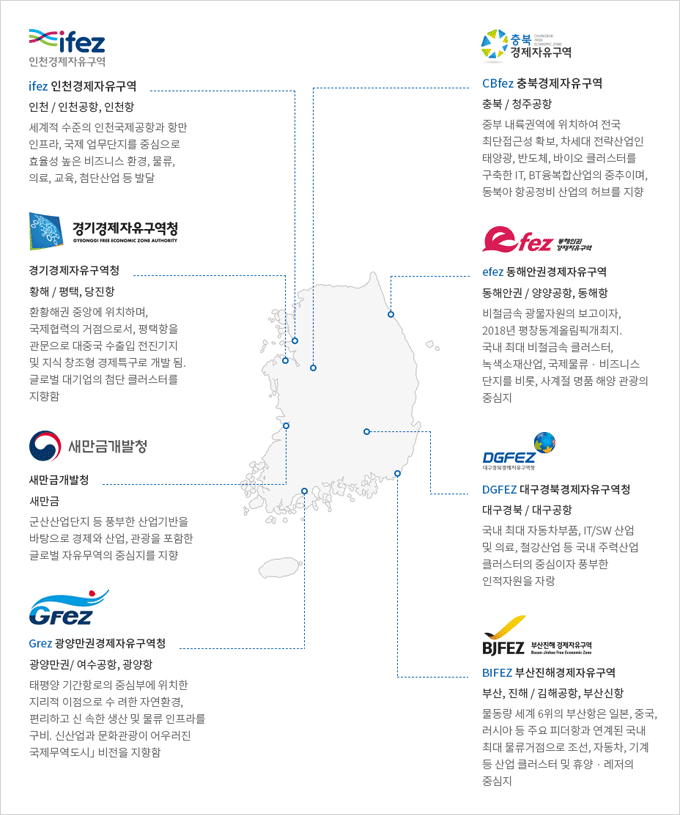
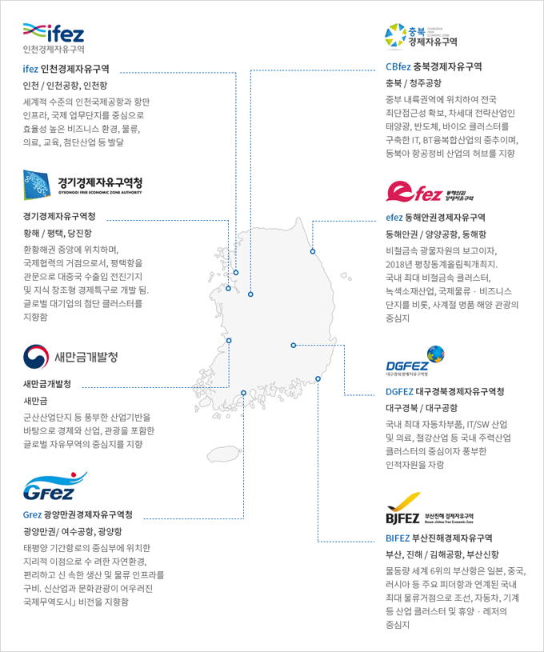

외국인투자기업 중점유치 지역
- Home
- 투자의 기회
- 외국인투자기업 중점유치 지역
- 경제자유구역
경제자유구역 및 새만금 현황
 

- (ifez)인천경제자유구역
인천 / 인천공항, 인천항 세계적 수준의 인천국제공항과 항만 인프라, 국제 업무단지를 중심으로 효율성 높은 비즈니스 환경, 물류, 의료, 교육, 첨단산업 등 발달
-
(CBfez)충북경제자유구역
충북 / 청주공항 중부 내륙권역에 위치하여 전국 최단접근성 확보, 차세대 전략산업인 태양광, 반도체, 바이오 클러스터를 구축한 IT, BT 융복합산업의 중추이며, 동북아 항공정비 산업의 허브를 지향
-
경기경제자유구역청
황해 / 평택, 당진항 환황해권 중앙에 위치하여, 국제협력의 거점으로서, 평택항을 관문으로 대중국 수출입 전진기지 및 지식 창조형 경제특구로 개발 됨. 글로벌 대기업의 첨단 클러스터를 지향함.
-
(efez)동해안권경제자유구역
동해안권 / 양양공항, 동해항 비철금속 광물자원의 보고이자, 2018년 평창 올림픽개최지. 국내 최대 비철금속 클러스터, 녹색소재산업, 국제물류&비즈니스 단지를 비롯, 사계절 명품 해양 관광의 중심지
-
(DGFEZ)대구경북경제자유구역청
대구경북 / 대구공항 국내 최대 자동차부품, IT/SW 산업 및 의료, 철강산업 등 국내 주력산업 클러스터의 중심이자 풍부한 인적자원을 자랑
-
새만금개발청
새만금 군산산업단지 등 풍부한 산업기반을 바탕으로 경제와 산업, 관광을 포함한 글로벌 자유무역의 중심지를 지향
-
(Grez)광양만권경제자유구역청
광양만권 / 여수공항, 광양항 태평양, 기간항로의 중심부에 위치한 지리적 이점으로 수려한 자연환경, 편리하고 신속한 생산 및 물류 인프라를 구비, 신산업과 문화관광이 어우러진 국제무역도시 비전을 지향함.
-
(BIFEZ)부산진해경제자유구역
부산, 진해 / 김해공항, 부산신항 물동량 세계 6위의 부산항은 일본, 중국, 러시아 등 주요 피더항과 연계된 국내 최대 물류거점으로 조선, 자동차, 기계 등 산업 클러스터 및 휴양& 레저의 중심지